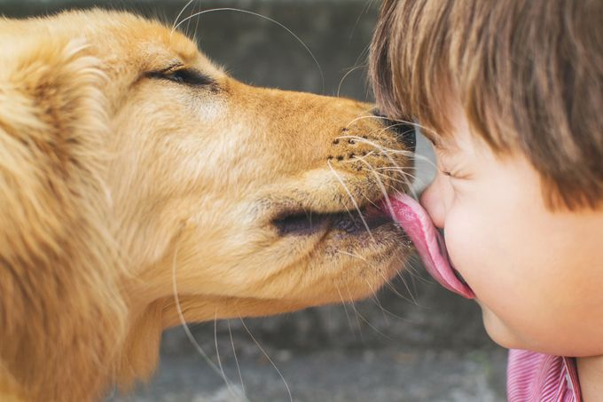
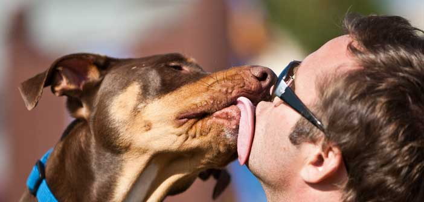

Köpekler Sahibini Neden Yalar?

Köpekler; havlamak, hırlamak, ulumak, kuyruk sallamak, kokuların izini sürmek gibi
içgüdüsel davranışlarda bulunurlar. Bu davranışlardan biri de insanları yalamaktır. Köpek sahiplerini mutlu eden yalama
hareketi, köpeklerin diğer davranışları gibi olağandır. Fakat köpeklerin sürekli bu içgüdüsel eylemi göstermesi anormal bir
durum olduğuna işaret de edebilir. Yani yalama eylemi rahatsız edici boyutlara ulaştıysa köpekte ortaya çıkan bir davranış
bozukluğundan söz edilebilir. Önemli olan köpeğinizin sizi aşırı şekilde yalamaması ve bu davranışın görülme sıklığıdır.
Köpeklerin sahiplerini yalaması, duruma, koşullara ve köpeğin ruh haline göre farklı nedenlerden ötürü olabilir. Ama genel
bir kabulle yalamak, köpeklerin sahiplerine sevgi göstermek ve onlarla iletişim kurmaya çalışarak ilgi çekmek, sahiplerinin
üstünlüklerini kabul etmek, sahibinden aldığı kokunun tadına bakmak ve sahibini temizlemek isteği şeklinde sıralanabilir.
Yalamak, Köpeklerde Bir Sevgi Göstergesidir.
Köpeklerin sahiplerini sevdiklerini belli etmelerinin en kolay yolu yalamaktadır. Sevgi göstergesi olarak sergilenen yalama
davranışı köpeklerin yavruyken annelerinden öğrendikleri bir harekettir. Anne köpekler yavruların nefes alabilmelerini ve kan
akışlarının hızlanmasını sağlamak için doğum yaptıktan hemen sonra yavrularını yalarlar. Bu hareket, anne ile yavruların
arasındaki bağı kuvvetlendirir. Dolayısıyla köpeğinizin sizi yalaması aileden biri olduğunuzun göstergesidir. Köpeğiniz
özellikle yüzünüzü yalıyorsa bu size sevgisini göstermek niyetinde olduğundandır ve yüz yalamayı köpeğinizin sizi öpmesi
şeklinde algılamak doğru olacaktır.
Yalamak, Bir İletişim ve İlgi Çekme Aracıdır.
İnsanlarla yakın ilişkiler kurmak konusunda oldukça başarılı olan köpekler, yalama eylemini bir iletişim ve ilgi çekme aracı
olarak da kullanırlar. Köpekler sahiplerinin ilgisini üzerlerine toplamak için havlama gibi sert bir hareketin yerine daha
şefkatli bir eylem olan yalamayı tercih ederler. Köpeğiniz oyun oynamak ya da sevgi görmek istediğinde özellikle elinizi
yalayarak ona odaklanmanızı sağlamanın peşindedir. Yalama, mama isteğinin bir ifadesi olarak da köpekler tarafından
kullanılır.
Köpekler, Yalama Davranışı ile Sahiplerinin Üstünlüğünü Kabul Eder.
Köpeklerin doğal yaşam alanlarında sürü halinde yaşayan canlılar olduğu düşünüldüğünde sürüye liderlik eden alfaya itaat
ettiklerini gösteren hareketin yalama olduğu anlaşılacaktır. Dolayısıyla yalama bazen bir sevgi gösterisi olmaktan öte karşı
tarafın üstünlüğünü kabul etmek ve onun otoritesine saygı göstermek anlamına da gelir. Köpekler kendilerini eğiten ve büyüten
sahiplerine bağlılıklarını yalayarak gösterirken bu eylemin bir diğer nedeni de sahibi olan insanın üstünlüğünü kabul
etmektir.
Köpeklerde Yalama Davranışının Görülmesinin Diğer Nedenleri
Köpekler, sahiplerine sevgi göstermek ve onlardan ilgi beklemek ile üstünlüklerini kabul etmek dışında başka
nedenlerle de yalama davranışında bulunurlar. Olası nedenlerden biri sahiplerini temizlemeye çalışmaktır ki, bu köpeklerin
sahiplerine duydukları sevgiyi göstermenin farklı bir yoludur. Ayrıca köpekler sahiplerinin elinde ya da yüzündeki kokuların
ne olduğunu anlamak ve kokunun tadına bakmak için de onları yalarlar.
Türlerine ve karakterlerine göre yalama sıklıkları değişse de tüm köpekler sahiplerini yalarlar.
Bu olağan davranışın sürekli ve rahatsız edici biçimde tekrarlanması ise köpeğin strese girdiği anlamına gelebilir. Stres ve
davranış bozuklukları köpeklerin durmaksızın sahiplerini yalamasına neden olabilir.

|